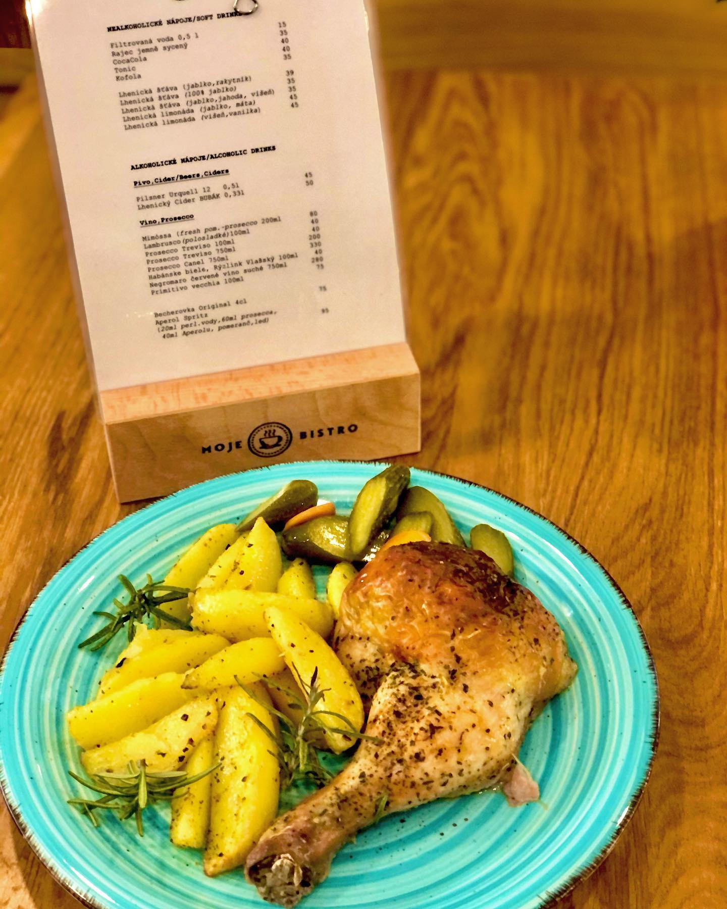

Plnené kuracie stehná podľa @mojebistro — Normy Jedál
PONDELOK
11.1.2021
• rajská polievka s mozzarellou
• plnené kuracie stehná - farmárske
zemiaky
• šťavnatý jablkový perník
#obed #coronatime #support #pomodorosoup #rajska #plnenekuraciestehna #kuresnadivkou #pernik
#mojebistro #chodov #food #jidlo #polevka #praha #prague #food #ranajky #takeaway #nejlepsichlebanajiznimmeste